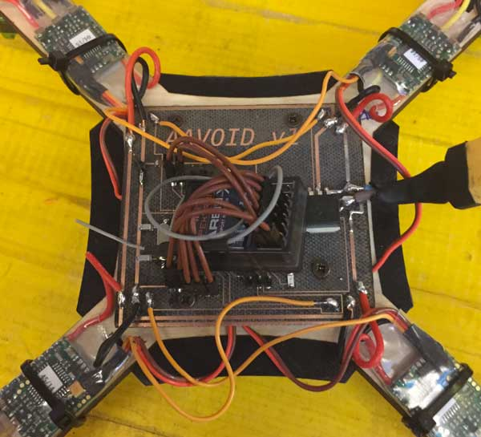
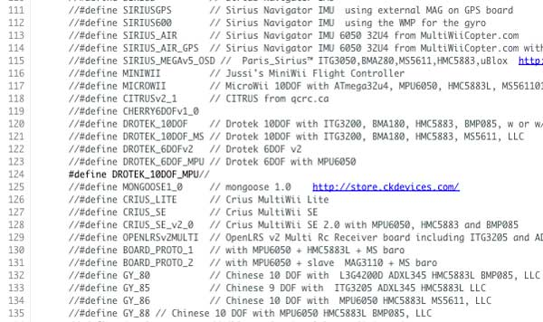

Teamwork:AAVOID v1.0
After everyone finished their personal work, we started the teamwork part, which involves the soldering of the board, assembly the drone, configure of MultiWii and the first test flight.
Soldering
As first step to build the first prototype of AAVOID quadcopter was to solder the final board, that came frome the union from the power distribution board and the fly control board.
As you can see, the space where’s the name and the version of the board, it’s deliberately empty to fit future components.
Everyone has proceeded to solder a board, having finally two of them, to reduce the probability of errors. The board was very easy and quick to solder due some unnecessary components was removed from the schematic, and there is plenty of space for the future integration of the sensors and actuators board.
We leave the endpoint connectors of the distribution board, as we needed to see how this first version will fit with the frame and the other physical parts. In the following picture, there is the soldered board:
Assembly
As we wasn’t sure about the board mounting holes, we don’t let the laser completely cut them: we adjusted the holes with a dremel (as you can see in the picture above), after tried to fit the board in the frame, paying attention to the position of the IMU that should stay perfectly centered.
Center the IMU was a fundamental step, that we prepared together by considering combining the positioning of the IMU connectors on the board and the hole for the IMU connectors on the the frame. We decided to put the IMU directly on top frame surface, and firmly block it with bi-adhesive scotch tape.
This because we wanted to exploit the plywood surface finish, to put the IMU in a almost ground parallel position and for taking it at the same level with motors basement. Here is the IMU mounted on the frame:
Once mounted the IMU on the frame we started to add the physical parts like the foots and the upper structure, that are 3d printed. The foots are blocked in the frame by using the predisposed holes on it, and fit together becoming hard to remove.
The upper structure, instead, is attached on the frame using screws and bolts, and its function is to cover and protect the IMU, and to hold the battery.


After that we placed the board on the frame and we block them using screw.
The next steps in assembly AAVOID quadcopter were to add ESCs, motors and the receiver and to test them. ESCs were attached to frame arms with cable ties, and connected to board for power supply and signal. We decided to solder all of these connection to avoid in-fly dangerous disconnections. For the receiver we connect them to the board using the specific pin on it.

After the ESCs were all in place, we continued with motors. Motors are fixed with 4 10mm bolts directly on the motors platform, placed at the end of each frame arm. Because of the motors are the most stressed part, as they bring movements to the quadcopter, we apply one washer to each bolt.
The next step is to test and configure the quadcopter, in order to do this we didn’t mount propellers, as they can be dangerous.
Test and Configuration
The first thing we did, was to verify if the board works correctly. To start testing the board we tried to power it with 5V, to see if there was some smoke. As Daniele didn’t put the power led, to know if the board was really switched on, we needed to program it. So, due to the fact that luckily there wasn’t any smoke, we tried to program the board with an Arduino as ISP. Also this step was passed, as the board was programmed flawlessly.
As final step in programming the board we uploaded MultiWii, defining in the “config.h” file the type of multicopter and IMU, uncommenting the relative lines.

As you can see in the following video, the IMU and the board work fine, but the accelerometer, the gyro and the magnetometer was not calibrated.
As further test we tried the connection between smartphone and the board, using USB OTG cable, in order to visualize the IMU data on the smartphone screen, and also this test was good.
Next step was to test motors and ESCs, and, as required intermediate steps, arming of the quadcopter and radio channel. Due we’ve a 5-channel radio control, and to the fact that the fifth channel isn’t strictly needed to fly, we used this channel as input for arming/disarming the quadcopter. We set as arming signal an high level of this channel, and we do this directly from the Multiwii control panel.
After this we have configured the ESCs, following the guide on the
We need to set the min and the max of all ESCs. To do this, you must connect one by one each ESCs directly to the receiver on the GAS channel. Then, turn on the TX and move the gas to 100% then connect the battery to the ESC, it starts beeping. After, bring the throttle to 0 and wait fot the confirmation beep.
The next thing we did was setting end points. Using the Multiwii GUI, open the RC CONTROLS tab look at the live tx data, then use your tx sub trim to set the throttle low at 1000 and all the mid sticks at 1500.
Then using the tx end points adjustment make the throttle high point 2000, yaw left 1000, yaw right 2000, pitch down 1000, pitch up 2000, roll left 1000, roll right 2000. You may have to readjust for 1500 center.
Ensure that all readings move in direction of TX sticks and switches (maximum value when the sticks are in the upper right corner). Reverse on TX if not. Note: Do not set Ends Points less than 1000 or greater than 2000. Slightly within these limits is better than any value going outside these limits.
After, we have ensured that motors are turning in correct direction with correct propellerps for rotation and not mounted upside down, following this schematic:
The last things we did were calibrate the accelerometer/gyroscope and the magnetometer. For the accelerometer/gyroscope calibration, we palced the drone on a flat surface, and then lunched the calibration option: when the calibration is finished value of the sensor should now be close to 0 (within the range -10 to 10) for PITCH and ROLL, and close to either 256 or 512 in the Z axis.
To calibrate the magnetometer we had hit the CALIB_MAG button in the Multiwii GUI, starting the calibration process: you have 30 seconds to rotate the board in all orientations. It doesn’t matter too much which order of directions you rotate it, but this is what we generally do:
- Begin by rotating the drone 360 degrees passing through North, East, South and West.
- Now flip the board over 360 degrees in the roll axis, then undo the flip back to normal.
- Now flip the board end-over-end in the pitch axis a complete 360 degrees, then undo the flip back to normal
- Now wave the board around in the air as if you were actually flying around outside, back and forth, side to side, up and down.
- Stop when the yellow light stops blinking and returns to normal,
Finished the calibration procedure, we went out to make the first flight test!
This is the video of one of our first test flight
As you can see AAVOID still not fly perfectly. We think this happened because we left default flight mode of MultiWii set to ACRO. From what we've read from Multiwii documentation, this flight mode is useful for "performing acrobatics (tight turns, flips, etc)" and also uses only the gyroscope.
Another consideration about flight is relative to choice to put the battery to the top instead of placing it under the frame, that could have been caused further flight instability. These consideration could explain why AAVOID v1 was so reactive to the transmitter sticks.
As we and other fellow students really enjoyed these flights, we ended up in a crash, useful for us to point out frame fragility. In fact in this crash the frame broke in one of its weak points:
Even the propellers were broken in the crash:
So for future flights, we are thinking about a more solid frame and some sort of propellers protection.
Talking about wiring and flight controller and distribution board, we pinned the following modification to be made in the next version:
- add two 10uF capacitor to the distribution board in order to stabilize the power supply
- rotate also the bottom left ESC pads
- make the board larger to be firmly blocked by the 3D printed supports structure
- add another GND for board Multiwii Uploading (I soldered a pin on the fly to be able to program it)
- add another RESET pin (I soldered a pin on the fly to be able to use reset)
- reorder ESC signals pad, as they were mirrored
- maybe add add a switch to power on and off the quadcopter without remove the batter
Specific and Download
AAVOID v1 fabbed parts list:
- flight and distribution board
- 250mm frame
- foots
- battery holder (upper structure)
AAVOID v1 bought parts list:
- 3S 11.1V 1300mah LiPo battery
- 4 x 12A Afro ECS’s
- 4 x 2150kv 2206 Multistar brushless motors
- Drotek 10DOF IMU
- AR610 6 channel Spektrum receiver
- DX5E 5 channel Spektrum transmitter
- 4 x carbon fiber 6030 propellers